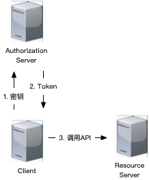
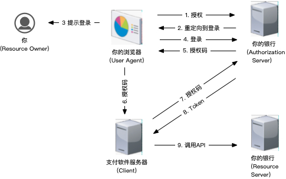

OAuth 2.0是一种认证授权工业标准，为多种应用（Web、桌面程序、手机、智能设备等）提供简单易安全的认证授权方法。
https://oauth.net/2/
安全问题，离不开信任关系：
举个例子，我们都知道银行卡的密码可以在柜员机输入。这是因为我们信任柜员机。
再举个例子，你去便利店买东西，用手机支付时，都会提示你输入密码。因为支付服务信任的是你，而不是你的手机。
我们从角色和授权流程两个方面入手，来看看OAuth 2.0。
角色
-
Resource Owner
Resource Owner是指资源的属主，一般是最终用户，有时候也可以是一台机器。比如你把钱存进银行，钱就是Resource，而你就是Resource Owner。
-
Resource Server
Resource Server是指资源的托管者，其需要保证资源的安全性。你的银行就是Resource Server。
-
Client
Client指需要使用资源的应用，比如你的支付软件就是Client。
-
Authorization Server
Authorization Server指负责认证Resource Owner身份和授权的实体。比如，你的银行就是Authorization Server。
OAuth 2.0的角色划分明确了Resource Owner与Client的角色分离，有助于清晰定义信任关系。
角色之间的信任关系，取决于使用的授权流程。
授权流程
-
Resource Owner Password Credentials Grant

我们称这个授权流程为密码授权。
⚠️ 这个流程中，密码直接交给Client，有可能被泄漏，（密码泄漏。
因此，需要注意采用安全的传输方式，不使用明文传输密码，打印日志时进行脱敏等措施。
密码授权仅适用于不能使用其他授权的时候（比如不支持重定向）。
-
Client Credentials Grant

为了与密码区分，我们称其为机要授权流程。其中的Client Credentials是在服务提供商处购买服务时，由服务提供商提供的。
一般是指Client Id与Client Secret。
Client Credentials是机密信息需要安全保存，因此该流程一般常见于服务器使用。此时，服务器既是Resource Owner又是Client。
⚠️ 其安全问题与密码认证类似。由于服务器是在受控的环境运行，相比密码授权安全一些，但也需要注意，比如不要将机密信息明文的写到配置文件中，可以采用环境变量或加密等方式。如果万一泄漏了，应当立即重置。另外，有工具可以帮助检查泄漏，比如：
-
Authorization Code Grant

我们称其为授权码授权流程。这个流程没有直接把密码交给Client，因此避免密码暴露给第三方Client。
⚠️ 由于code是通过url传递的,会在referrer头或其他方式被泄漏。RFC 6819。
OAuth安全实践草案16 给出了一些反制措施：
- Client通过”Referrer-Policy: no-referrer”抑制Referrer头
- Authorization Server通过PKCE验证Client，验证通过才发布
Access Token
- Authorization Server限制授权码只能兑换一次，重复兑换时撤销相关已发布的
Access Token
- 用返回自动提交表单
-
Implicit Grant

由于在授权过程中没有验证Client，我们称其为隐式授权。隐式授权本意是为了减少Client与Authorization Server的交互次数，但由于其安全问题没有好的对策，已经被认为是禁止使用的。应当使用授权码授权。
⚠️ 隐式授权会造成Access Token泄漏，并且由于Authentication Server没有验证Client，无法限制Access Token应用范围(Sender-Constrained Access Tokens)。所以，隐式授权是禁止使用的。
另外，为了支持交互受限设备，后续又增加了一个Device Authorization Grant，本文就不介绍了。
总结
总结一下，OAuth 2.0 这4种授权流程在信任关系方面采取的手段：
| 信任关系 |
密码授权 |
机要授权 |
授权码授权 |
隐式授权 |
RO信任C |
用户 |
管理员 |
用户 |
用户 |
C信任AS |
https |
https |
https |
https |
AS信任C |
Client Credentials |
Client Credentials |
Client Credentials+PKCE+检查重定向地址 |
N/A |
C信任RS |
https |
https |
https+state |
https+state |
RS信任C |
Access Token |
Access Token |
Access Token |
N/A |
- RO = Resource Owner
- C = Client
- AS = Authorization Server
- RS = Resource Server
安全问题是一场持续进行的竞赛，没有一劳永逸的方案。并且，人的安全意识也非常重要，技术和机器无法解决全部问题。
附上笑话一枚：
 图片来自：https://xkcd.com/327/
图片来自：https://xkcd.com/327/